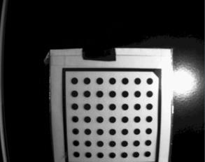
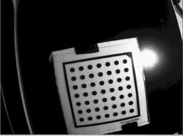
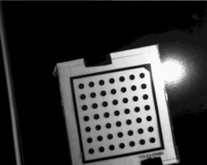
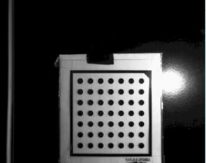

|
类型 |
标定 |
|
描述 |
生成将畸变图像矫正到无畸变图的映射map图 若要对图像进行畸变矫正，通常首先使用此指令生成map图，然后使用ZV_ImpMapImage指令进行畸变矫正，矫正图像xy方向与世界坐标xy方向同向 |
|
语法 |
ZV_CalGenRectifyMap(param,map1,map2[,rectifyType=0,width=0,height=0,rectCx=0,rectCy=0])
参数： param：ZVOBJECT类型，输入参数，标定参数，仅适用透视畸变标定和针孔模型标定出的标定参数 map1：ZVOBJECT类型，单通道图像32F，宽高由参数决定 map2：ZVOBJECT类型，单通道图像32F rectifyType：矫正类型，0 - 透视畸变加径向畸变；1 - 透视畸变矫正；2 - 径向畸变矫正。注意：如果标定参数是由透视标定生成，选择0矫正类型则只会进行透视矫正，选择2矫正类型则会返回错误 width：map图像的宽，为0时使用标定图像的宽 height：map图像的高，为0时使用标定图像的高 rectCx：矫正中心x，为0时，默认使用图像中心x rectCy：矫正中心y，为0时，默认使用图像中心y，在标定时含径向畸变，使用图像中心作为矫正中心效果最佳 |
|
适用控制器 |
支持ZV功能或者5系列以上的控制器 |
|
例子 |
 原图 透视畸变矫正
  原图 径向畸变矫正
 原图 透视畸变 + 径向畸变矫正 ' 标定或者加载已有的标定参数文件 ZVOBJECT param,map1,map2 ZV_ObjRead(param,"Calib.zvb") ZV_CalGenRectifyMap(param,map1,map2,0,0,0) '生成畸变矫正map图 ZVOBJECT img,dst ZV_ImgRead(img,"tool3.jpg",0) '读取图片 ZV_ImpMapImage(img,map1,map2,dst) '畸变矫正 |
|
相关指令 |